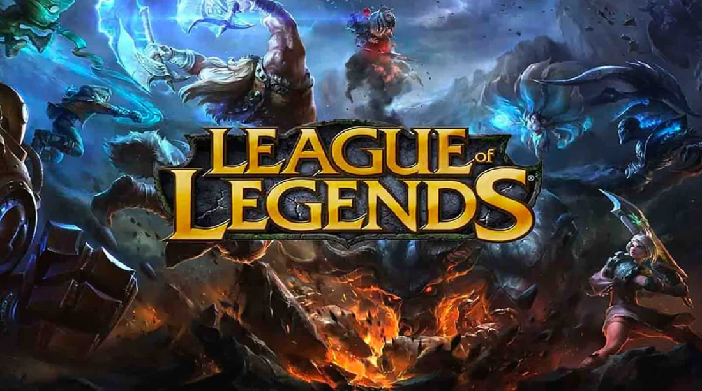
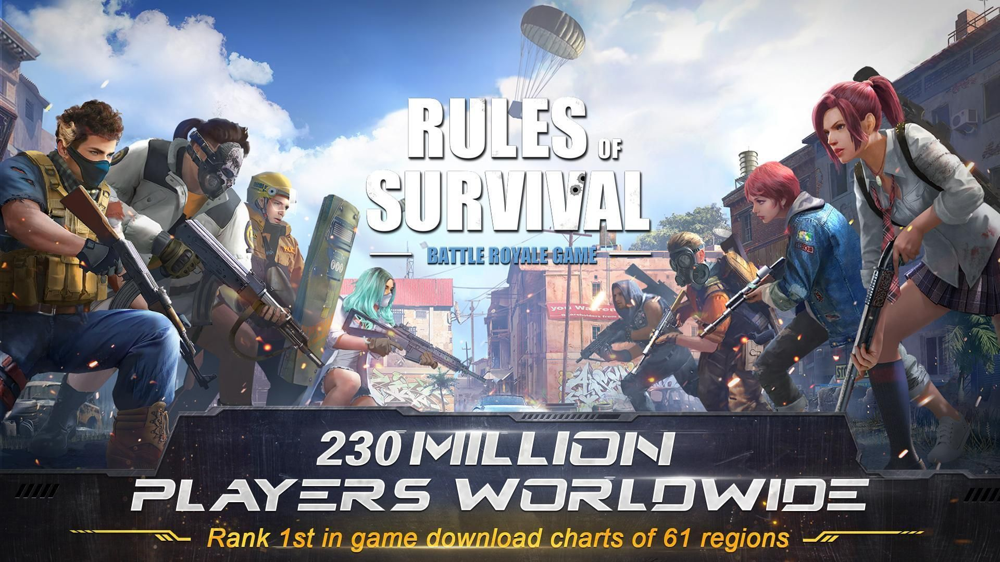
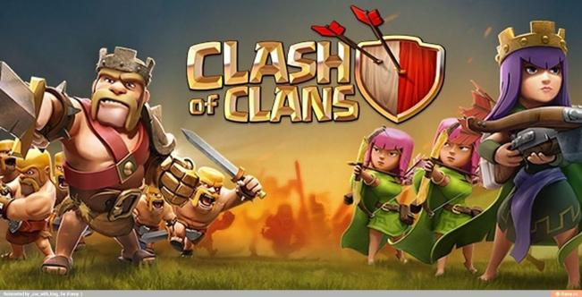

League of Legends (LoL) is a multiplayer online battle arena video game developed and published by Riot Games for Microsoft Windows and macOS. Inspired by the Warcraft III: The Frozen Throne mod Defense of the Ancients, the game follows a freemium model and is supported by microtransactions. In League of Legends, players assume the role of a "champion" with unique abilities and battle against a team of other player- or computer-controlled champions. The goal is usually to destroy the opposing team's "Nexus", a structure that lies at the heart of a base protected by defensive structures, although other distinct game modes exist as well with varying objectives, rules, and maps. Each League of Legends match is discrete, with all champions starting off relatively weak but increasing in strength by accumulating items and experience over the course of the game. Champions span a variety of roles and blend a variety of fantasy tropes, such as sword and sorcery, steampunk, and Lovecraftian horror. Although the discrete nature of each match prohibits an overarching narrative in-game, the various champions make up a large and ever-evolving fictional universe developed by Riot Games through short stories, comics, cinematics, and books.
Rules of Survival follows the standard form of the battle royale genre, where players fight to be the last person (or team) alive. Players can choose to enter the match in different modes: Solo, Duo, Squad (four players), or a Fireteam (five players). In either case, the last person or team left alive wins the match. There are two playable maps in the game: Ghillie Island (120 players, 4.8km×4.8km) and Fearless Fiord (300 players, 8km×8km). There are also different game modes such as the Gold Mode, in which the player can earn gold, or the Diamond Mode in which players may earn diamonds throughout the match. The introduction of the Fearless Fiord game map introduces a new type of match, the Blitzkrieg, in which players will land only on a certain part of the map equipped with a pistol, a backpack and basic armor. Blitzkrieg is meant to make players clash head-on.
lash of Clans is a freemium mobile strategy video game developed and published by Finnish game developer Supercell. The game was released for iOS platforms on August 2, 2012, and on Google Play for Android on October 7, 2013.The game is set in a fantasy-themedwhere the player is a chief of a village. Clash of Clans tasks players to build their own village using the resources gained from attacking other players through the game's fighting features. The main resources are gold, elixir and dark elixir. Players can conjoin to create clans, groups of up to fifty people who can then participate in Clan Wars together, donate and receive troops, and chat with each other.
